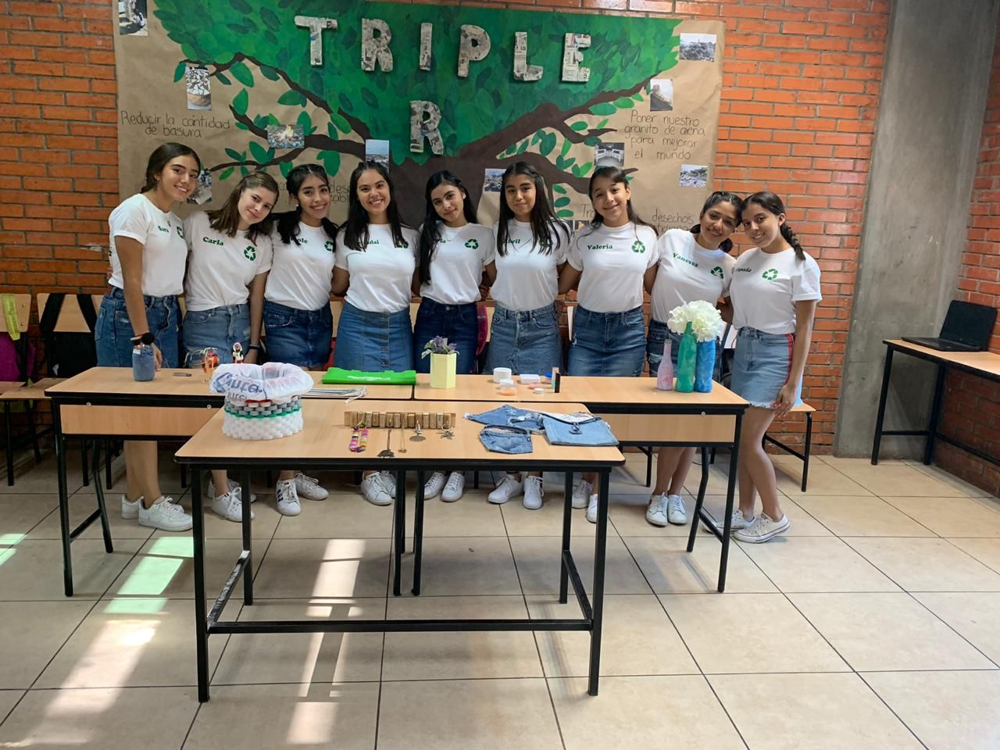

ANGLO PRO
Este proyecto fue realizado con ayuda del Colegio Anglo, elaborado con 6 compañeras que cursaron conmigo tercero de secundaria, en el realizamos varios ejemplos; muebles, sillones,mesas, lámparas y decoraciones de un hogar pero todo de material 100% reciclado; llantas, basura, botellas, tapas de botellas y también dimos presentación de bolsas para el supermercado reutilizables y popotes elaborados de bambú y metal.
Esto con la intención de presentar objetos con material reciclado bonitos, dar opciones para contrubuir a nuestra comunidad y proteger no solo al planeta, también a nosotros, al momento de la presentación mencionamos las cifras y las consecuencias si seguimos así y no tomamos con la seriedad correspondiente este tema.
